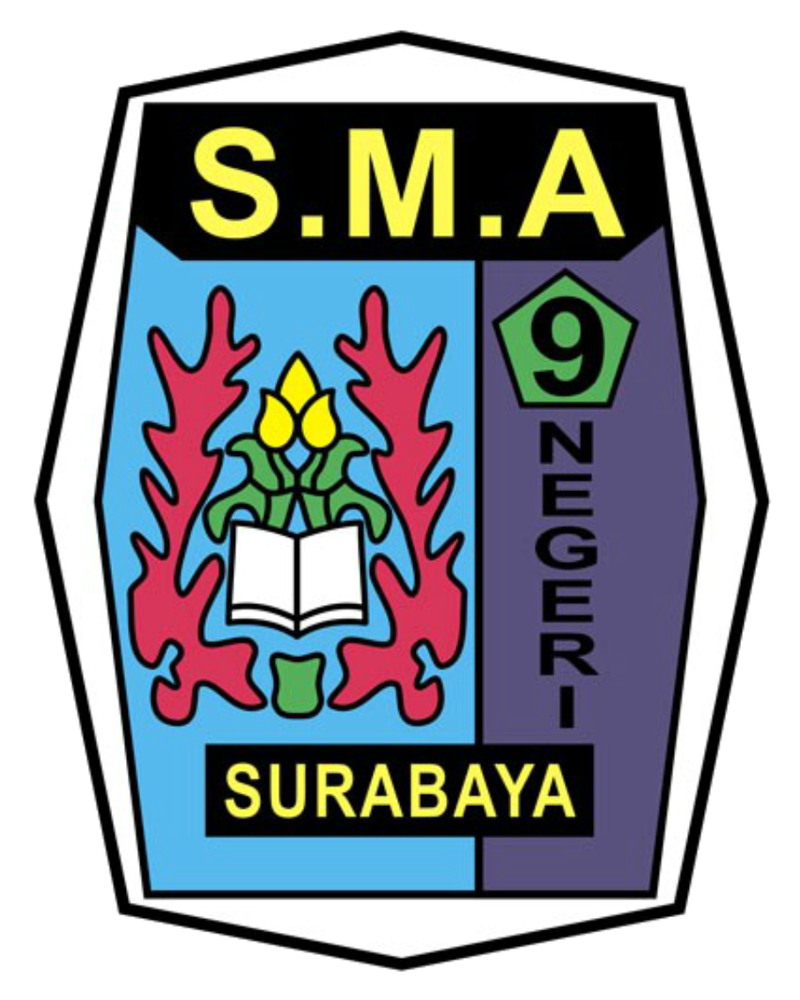

Verifikasi Dokumen
Resmi SMAN 9
Memuat data...
Sistem Validasi Digital SMAN 9
Generator QR SMAN 9
Input Link
Input Foto TTD
Masukkan Link/URL:
Pilih Foto TTD:
Generate QR Code
QR Code Berhasil Dibuat!
Download QR Code
